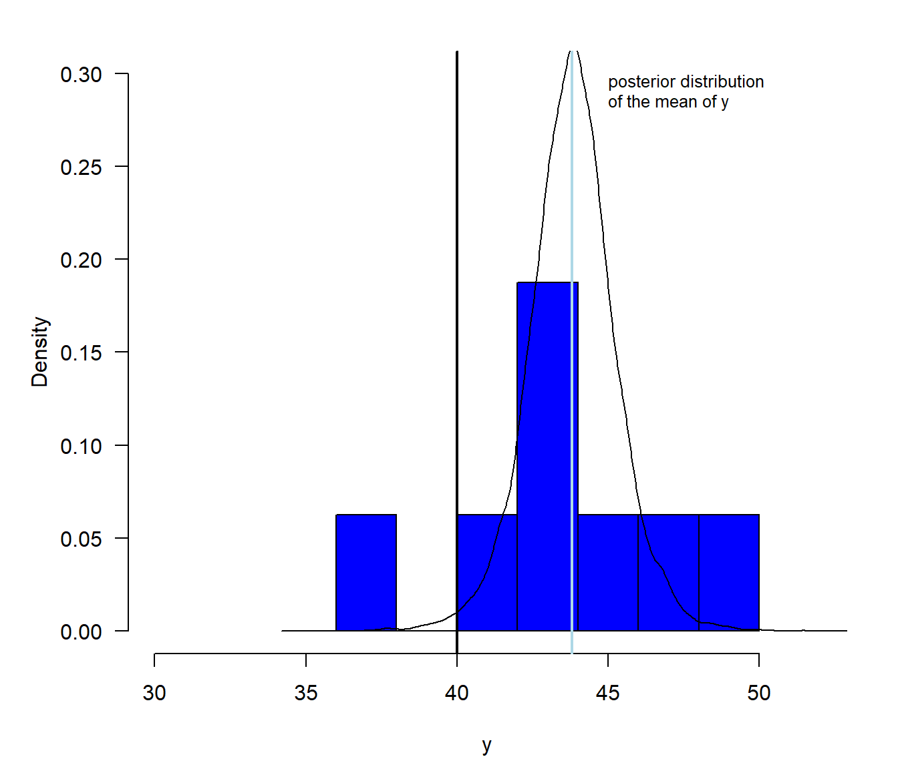

2 Prerequisits: Basic statistical terms
This chapter introduces some important terms useful for doing data analyses. It also introduces the essentials of the classical frequentist tests such as t- and Chisquare test. Even though we will not use nullhypotheses tests later (Amrhein, Greenland, and McShane 2019), we introduce them here because we need to understand 100 years of scientific literature. For each classical test, we provide a suggestion how to do it in a Bayesian way and we discuss some differences between the Bayesian and frequentist statistics.
2.1 Variables and observations
Empirical research involves data collection. Data are collected by recording measurements of variables for observational units. An observational unit may be, for example, an individual, a plot, a time interval or a combination of those. The collection of all units ideally build a random sample of the entire population of units in that we are interested. The measurements (or observations) of the random sample are stored in a data table (sometimes also called data set, but a data set may include several data tables. A collection of data tables belonging to the same study or system is normally bundled and stored in a data base). A data table is a collection of variables (columns). Data tables normally are handled as objects of class data.frame in R. All measurements on a row in a data table belong to the same observational unit. The variables can be of different scales (Table 2.1).
| Scale | Examples | Properties | Coding in R |
|---|---|---|---|
| Nominal | Sex, genotype, habitat | Identity (values have a unique meaning) | factor() |
| Ordinal | Elevational zones | Identity and magnitude (values have an ordered relationship) | ordered() |
| Numeric | Discrete: counts; continuous: body weight, wing length | Identity, magnitude, and intervals or ratios | intgeger() numeric() |
2.2 Displaying and summarizing variables
While nominal and ordinal variables are summarized by giving the absolute number or the proportion of observations for each category, numeric variables normally are summarized by a location and a scatter statistics, such as the mean and the standard deviation or the median and some quantiles. The distribution of a numeric variable is graphically displayed in a histogram (Fig. (histogram)).

Figure 2.1: Histogram of the length of ell of statistics course participants.
To draw a histogram, the variable is displayed on the x-axis and the \(x_i\)-values are assigned to classes. The edges of the classes are called ‘breaks’. They can be set with the argument breaks= within the function hist. The values given in the breaks= argument must at least span the values of the variable. If the argument breaks= is not specified, R searches for breaks-values that make the histogram look smooth. The number of observations falling in each class is given on the y-axis. The y-axis can be re-scaled so that the area of the histogram equals 1 by setting the argument density=TRUE. In that case, the values on the y-axis correspond to the density values of a probability distribution (Chapter 4).
Location statistics are mean, median or mode. A common mean is the
- arithmetic mean: \(\hat{\mu} = \bar{x} = \frac{i=1}{n} x_i \sum_{1}^{n}\)(R function mean),
where \(n\) is the sample size. The parameter \(\mu\) is the (unknown) true mean of the entire population of which
the \(1,...,n\) measurements are a random sample of. \(\bar{x}\) is called the sample mean and used as an estimate for \(\mu\). The \(^\) above any parameter indicates that the parameter value is obtained from a sample and, therefore, it may be different from the true value.
The median is the 50% quantile. We find 50% of the measurements below and 50% above the median. If \(x_1,..., x_n\) are the ordered measurements of a variable, then the median is:
- median \(= x_{(n+1)/2}\) for uneven \(n\), and median \(= \frac{1}{2}(x_{n/2} + x_{n/2+1})\) for even \(n\) (R function median).
The mode is the value that is occurring with highest frequency or that has the highest density.
Scatter also is called spread, scale or variance. Variance parameters describe how far away from the location parameter single observations can be found, or how the measurements are scattered around their mean. The variance is defined as the average squared difference between the observations and the mean:
- variance \(\hat{\sigma^2} = s^2 = \frac{1}{n-1}\sum_{i=1}^{n}(x_i-\bar{x})^2\)
The term \((n-1)\) is called the degrees of freedom. It is used in the denominator of the variance formula instead of \(n\) to prevent underestimating the variance. Because \(\bar{x}\) is in average closer to \(x_i\) than the unknown true mean \(\mu\) would be, the variance would be underestimated if \(n\) is used in the denominator.
{The maximum likelihood estimate (Chapter xxx.xx) of the variance corresponds to the variance formula using \(n\) instead of \(n-1\) in the denominator, see, e.g., Royle and Dorazio (2008).}
The variance is used to compare the degree of scatter among different groups. However, its values are difficult to interpret because of the squared unit. Therefore, the square root of the variance, the standard deviation is normally reported:
- standard deviation \(\hat{\sigma} = s = \sqrt{s^2}\) (R Function
sd)
The standard deviation is approximately the average deviation of an observation from the sample mean. In the case of a normal distribution, about two thirds (68%) of the data are expected within one standard deviation around the mean.
The variance and standard deviation each describe the scatter with a single value. Thus, we have to assume that the observations are scattered symmetrically around their mean in order to get a picture of the distribution of the measurements. When the measurements are spread asymmetrically (skewed distribution), then it may be more precise to describe the scatter with more than one value. Such statistics could be quantiles from the lower and upper tail of the data.
Quantiles inform us about both location and spread of a distribution. The \(p\)th-quantile is the value with the property that a proportion \(p\) of all values are less than or equal to the value of the quantile. The median is the 50% quantile.The 25% quantile and the 75% quantile are also called the lower and upper quartiles, respectively. The range between the 25% and the 75% quartile is called the interquartile range. This range includes 50% of the distribution and is also used as a measure of scatter. The R function quantile extracts sample quantiles. The median, the quartiles, and the interquartile range can be graphically displayed using box and-whisker plots (boxplots in short, R function boxplot). The horizontal fat bars are the medians (Fig. ). The boxes mark the interquartile range. The whiskers reach out to the last observation within 1.5 times the interquartile range from the quartile. Circles mark observations beyond 1.5 times the
interquartile range from the quartile.
par(mar=c(5,4,1,1))
boxplot(ell~car, data=dat, las=1, ylab="Lenght of ell [cm]",
col="tomato", xaxt="n")
axis(1, at=c(1,2), labels=c("Not owing a car", "Car owner"))
n <- table(dat$car)
axis(1, at=c(1,2), labels=paste("n=", n, sep=""), mgp=c(3,2, 0))Figure 2.2: Boxplot of the length of ell of statistics course participants who are or ar not owner of a car.
The boxplot is an appealing tool for comparing location, variance and distribution of measurements among groups.
2.3 Correlations
A correlation measures the strength with which characteristics of two variables are associated with each other (co-occurr). If both variables are numeric, we can visualize the correlation using a scatterplot.
par(mar=c(5,4,1,1))
plot(temp~ell, data=dat, las=1, xlab="Lenght of ell [cm]",
ylab="Comfort temperature [°C]",
pch=16)
Figure 2.3: Scatterplot of the length of ell and the comfort temperature of statistics course participants.
The covariance between variable \(x\) and \(y\) is defined as:
- covariance \(q = \frac{1}{n-1}\sum_{i=1}^{n}((x_i-\bar{x})*(y_i-\bar{y}))\) (R function
cov)
As for the variance, also the units of the covariance are sqared and therefore covariance values are difficult to interpret. A standardized covariance is the Pearson correlation coefficient:
- Pearson correlation coefficient: \(r=\frac{\sum_{i=1}^{n}(x_i-\bar{x})(y_i-\bar{y})}{\sqrt{\sum_{i=1}^{n}(x_i-\bar{x})^2\sum_{i=1}^{n}(y_i-\bar{y})^2}}\) (R function
cor)
Means, variances, standard deviations, covariances and correlations are sensible for outliers. Single observations containing extreme values normally have a overproportional influence on these statistics. When outliers are present in the data, we may prefer a more robust correlation measure such as the Spearman correlation or Kendall’s tau. Both are based on the ranks of the measurements instead of the measurements themselves.
Spearman correlation coefficient: correlation between rank(x) and rank(y) (R function
cor(x,y, method="spearman"))Kendall’s tau: \(\tau = 1-\frac{4I}{(n(n-1))}\), where \(I\) = number of pairs \((i,k)\) for which \((x_i < x_k)\) & \((y_i > y_k)\) or viceversa. (R function
cor(x,y, method="kendall"))
2.4 Principal components analyses PCA
The principal components analysis (PCA) is a multivariate correlation analysis. A multidimensional data set with \(k\) variables can be seen as a cloud of points (observations) in a \(k\)-dimensional space. Imagine, we could move around in the space and look at the cloud from different locations. From some locations, the data looks highly correlated, whereas from others, we cannot see the correlation. That is what PCA is doing. It is rotating the coordinate system (defined by the original variables) of the data cloud so that the correlations are no longer visible. The axes of the new coordinates system are linear combinations of the original variables. They are called principal components. There are as many principal coordinates as there are original variables, i.e. \(k\), \(p_1, ..., p_k\). The principal components meet further requirements:
- the first component explains most variance
- the second component explains most of the remaining variance and is perpendicular (= uncorrelated) to the first one
- third component explains most of the remaining variance and is perpendicular to the first two
- …
For example, in a two-dimensional data set \((x_1, x_2)\) the principal components become
\(pc_{1i} = b_{11}x_{1i} + b_{12}x_{2i}\) \(pc_{2i} = b_{21}x_{1i} + b_{22}x_{2i}\) with \(b_{jk}\) being loadings of principal component \(j\) and original variable \(k\). Fig. 2.4 shows the two principal components for a two-dimensional data set. They can be calculated using matrix algebra: principal components are eigenvectors of the covariance or correlation matrix.

Figure 2.4: Principal components of a two dimensional data set based on the covariance matrix (green) and the correlation matrix (brown).
The choice between correlation or covariance matrix is essential and important. The covariance matrix is an unstandardized correlation matrix. Therefore, the units, i.e., whether cm or m are used, influence the results of the PCA if it is based on the covariance matrix. When the PCA is based on the covariance matrix, the results will change, when we change the units of one variable, e.g., from cm to m. Basing the PCA on the covariance matrix only makes sense, when the variances are comparable among the variables, i.e., if all variables are measured in the same unit and we would like to weight each variable according to its variance. If this is not the case, the PCA must be based on the correlation matrix.
pca <- princomp(cbind(x1,x2)) # PCA based on covariance matrix
pca <- princomp(cbind(x1,x2), cor=TRUE) # PCA based on correlation matrix
loadings(pca)##
## Loadings:
## Comp.1 Comp.2
## x1 0.707 0.707
## x2 0.707 -0.707
##
## Comp.1 Comp.2
## SS loadings 1.0 1.0
## Proportion Var 0.5 0.5
## Cumulative Var 0.5 1.0The loadings measure the correlation of each variable with the principal components. They inform about what aspects of the data each component is measuring. The signs of the loadings are arbitrary, thus we can multiplied them by -1 without changing the PCA. Sometimes this can be handy for describing the meaning of the principal component in a paper. For example, Zbinden et al. (2018) combined the number of hunting licenses, the duration of the hunting period and the number of black grouse cocks that were allowed to be hunted per hunter in a principal component in order to measure hunting pressure. All three variables had a negative loading in the first component, so that high values of the component meant low hunting pressure. Before the subsequent analyses, for which a measure of hunting pressure was of interest, the authors changed the signs of the loadings so that this component measured hunting pressure.
The proportion of variance explained by each component is, beside the loadings, an important information. If the first few components explain the main part of the variance, it means that maybe not all \(k\) variables are necessary to describe the data, or, in other words, the original \(k\) variables contain a lot of redundant information.
## Importance of components:
## Comp.1 Comp.2
## Standard deviation 1.2679406 0.6263598
## Proportion of Variance 0.8038367 0.1961633
## Cumulative Proportion 0.8038367 1.0000000{Ridge regression is similar to doing a PCA within a linear model while components with low variance are shrinked to a higher degree than components with a high variance.}
2.4.1 Inferential statistics
there is never a “yes-or-no” answer
there will always be uncertainty
Amrhein (2017)[https://peerj.com/preprints/26857]
The decision whether an effect is important or not cannot not be done based on data alone. For a decision we should carefully consider the consequences of each decision, the aims we would like to achieve and the data. Consequences, needs and wishes of different stakeholders can be formally combined with the information in data by using decision theoretical methods. In most data analyses, particularly in basic research and when working on case studies, we normally do not consider consequences of decisions. In these cases, our job is extracting the information of data so that this information later can be used by other scientists, stakeholders and politicians to make decisions.
Therefore, statistics is describing pattern in data and quantifying the uncertainty of the described patterns that is due to the fact that the data is just a (small) random sample from the population we would like to know.
Quantification of uncertainty is only possible if: 1. the mechanisms that generated the data are known 2. the observations are a random sample from the population of interest
Most studies aim at understanding the mechanisms that generated the data, thus they are most likely not known. To overcome that problem, we construct models, e.g. statistical models, that are (strong) abstractions of the data generating process. And we report the model assumptions. All uncertainty measures are conditional on the model we used to analyze the data, i.e., they are only reliable, if the model we used somehow realistically describes the data generating process. Because most statistical models do not describe the data generating process well, the true uncertainty almost always is much higher than the one we report.
In order to obtain a random sample from the population under study, a good study design is a prerequisite.
To illustrate how inference about a big population is drawn from a small sample, we here use simulated data. The advantage of using simulated data is that the mechanism that generated the data is known. However, in the example, we use different models for simulation and analysis.
Imagine there are 300000 PhD students on the world and we would like to know how many statistics courses they have taken before they started their PhD (Fig. @ref{fig:histtruesample}).
# simulate the virtual true population
set.seed(235325) # set seed for random number generator
# simulate fake data of the whole population
# using an overdispersed Poisson distribution
# There is no need to understand more of this model
# at this moment of the course than that this model
# produces integer numbers (counts). Poisson models
# will be introduced later.
statscourses <- rpois(300000, rgamma(300000, 2, 3))
# draw a random sample from the population
n <- 12 # sample size
y <- sample(statscourses, 12, replace=FALSE) 
Figure 2.5: Histogram of the number of statistics courses 300000 virtual PhD students have taken before their PhD started. The rugs on the x-axis indicate a random sample of the 300000 students. The black vertical line indicates the mean of the 300000 students (true mean) and the blue line indicates the mean of the sample.
We observe the sample mean, what do we know about the population mean? There are two different approaches to answer this question. 1) We could ask us, how much the sample mean would scatter, if we repeat the study many times? This approach is called the frequentist statistics. 2) We could ask us for any possible value, what is the probability that it is the true population mean? To do so, we use probability theory and that is called the Bayesian statistics.
Both approaches use (essentially similar) models. Only the mathematical techniques to calculate uncertainty measures differ between the two approaches. In cases when beside the data no other information is used to construct the model, then the results are approximately identical (at least for large enough sample sizes).
We illustrate what uncertainty intervals mean in Fig. @ref{fig:CImean}. A frequentist 95% confidence interval (blue horizontal semgent in Fig. @ref{fig:CImean) is constructed such that, if you were to (hypothetically) repeat the experiment or sampling many many times, 95% of the intervals constructed would contain the true value of the parameter. From the Bayesian posterior distribution we could construct a 95% interval (e.g., by using the 2.5% and 97.5% quantiles). This interval has traditionally been called credible interval. It can be interpreted that we are 95% sure that the true mean is inside that interval. Both interpretations only are reliable if the model is a realistic abstraction of the data generating process (or if the model assumptions are realistic).
Because both terms, confidence and credible interval, suggest that the interval indicates confidence or credibility but the intervals actually show uncertainty, it has been suggested to rename the interval into compatibility or uncertainty interval Gelman and Greenland (2019).
![Histogram of means of repeated samples from the true populations. The scatter of these means visualize the true uncertainty of the mean in this example. The blue vertical line indicates the mean of the original sample. The blue segment shows the 95% confidence interval (obtained by fequensist methods) and the violet line shows the posterior distribution of the mean (obtained by Bayesian methods). For both solutions, we assumed a Normal distribution for the data that is different from the true mechanism that generated the data (which was an overdispersed Poisson model. The star indicates the true mean.](1.1-prerequisites_files/figure-html/CImean-1.png)
Figure 2.6: Histogram of means of repeated samples from the true populations. The scatter of these means visualize the true uncertainty of the mean in this example. The blue vertical line indicates the mean of the original sample. The blue segment shows the 95% confidence interval (obtained by fequensist methods) and the violet line shows the posterior distribution of the mean (obtained by Bayesian methods). For both solutions, we assumed a Normal distribution for the data that is different from the true mechanism that generated the data (which was an overdispersed Poisson model. The star indicates the true mean.
2.5 Standard deviation and standard error

frequentist SE = SD/sqrt(n)
Bayesian SE = SD of posterior distribution
2.6 Central limit theorem / law of large numbers

normal distribution = Gaussian distribution
\(p(\theta) = \frac{1}{\sqrt{2\pi}\sigma}exp(-\frac{1}{2\sigma^2}(\theta -\mu)^2) = Normal(\mu, \sigma)\)
\(E(\theta) = \mu\), \(var(\theta) = \sigma^2\), \(mode(\theta) = \mu\)

2.7 Bayes theorem
\(P(A|B) = \frac{P(B|A)P(A)}{P(B)}\)
| car | flowers | wine | sum |
|---|---|---|---|
| no | 6 | 9 | 15 |
| yes | 1 | 6 | 7 |
| ——- | —————- | —————- | ——————- |
| sum | 7 | 15 | 22 |
What is the probability that the person likes wine given it has no car?
\(P(A) =\) likes wine \(= 0.68\)
\(P(B) =\) no car \(= 0.68\)
\(P(B|A) =\) proportion car-free people among the wine liker \(= 0.6\)
Knowing whether a persons owns a car increases the knowledge of the birthday preference.
2.8 Bayes theorem for continuous parameters
\(p(\theta|y) = \frac{p(y|\theta)p(\theta)}{p(y)} = \frac{p(y|\theta)p(\theta)}{\int p(y|\theta)p(\theta) d\theta}\)
\(p(\theta|y)\): posterior distribution
\(p(y|\theta)\): likelihood, data model
\(p(\theta)\): prior distribution
\(p(y)\): scaling constant
2.9 Single parameter model
\(p(y|\theta) = Norm(\theta, \sigma)\), with \(\sigma\) known
\(p(\theta) = Norm(\mu_0, \tau_0)\)
\(p(\theta|y) = Norm(\mu_n, \tau_n)\), where \(\mu_n= \frac{\frac{1}{\tau_0^2}\mu_0 + \frac{n}{\sigma^2}\bar{y}}{\frac{1}{\tau_0^2}+\frac{n}{\sigma^2}}\) and \(\frac{1}{\tau_n^2} = \frac{1}{\tau_0^2} + \frac{n}{\sigma^2}\)
\(\bar{y}\) is a sufficient statistics
\(p(\theta) = Norm(\mu_0, \tau_0)\) is a conjugate prior for \(p(y|\theta) = Norm(\theta, \sigma)\), with \(\sigma\) known.
Posterior mean = weighted average between prior mean and \(\bar{y}\) with weights equal to the precisions (\(\frac{1}{\tau_0^2}\) and \(\frac{n}{\sigma^2}\)) 
2.10 A model with two parameters
\(p(y|\theta, \sigma) = Norm(\theta, \sigma)\)
\(p(y|\theta, \sigma) = Norm(\theta, \sigma)\)
\(p(\theta, \sigma) = N-Inv-\chi^2(\mu_0, \sigma_0^2/\kappa_0; v_0, \sigma_0^2)\) conjugate prior
\(p(\theta,\sigma|y) = \frac{p(y|\theta, \sigma)p(\theta, \sigma)}{p(y)} = N-Inv-\chi^2(\mu_n, \sigma_n^2/\kappa_n; v_n, \sigma_n^2)\), with
\(\mu_n= \frac{\kappa_0}{\kappa_0+n}\mu_0 + \frac{n}{\kappa_0+n}\bar{y}\)
\(\kappa_n = \kappa_0+n\)
\(v_n = v_0 +n\)
\(v_n\sigma_n^2=v_0\sigma_0^2+(n-1)s^2+\frac{\kappa_0n}{\kappa_0+n}(\bar{y}-\mu_0)^2\)
\(\bar{y}\) and \(s^2\) are sufficient statistics
Joint, marginal and conditional posterior distributions

2.11 t-distribution
marginal posterior distribution of a normal mean with unknown variance and conjugate prior distribution
\(p(\theta|v,\mu,\sigma) = \frac{\Gamma((v+1)/2)}{\Gamma(v/2)\sqrt{v\pi}\sigma}(1+\frac{1}{v}(\frac{\theta-\mu}{\sigma})^2)^{-(v+1)/2}\)
\(v\) degrees of freedom
\(\mu\) location
\(\sigma\) scale
2.12 Frequentist one-sample t-test
H0: the mean weight is equal to exactly 40g.
\(t = \frac{\bar{y}-\mu_0}{\frac{s}{\sqrt{n}}}\)
##
## One Sample t-test
##
## data: y
## t = 3.0951, df = 7, p-value = 0.01744
## alternative hypothesis: true mean is not equal to 40
## 95 percent confidence interval:
## 40.89979 46.72521
## sample estimates:
## mean of x
## 43.81252.13 Nullhypothesis test
p-value: Probability of the data or more extreme data given the null hypothesis is true.

2.14 Confidence interval
# lower limit of 95% CI
mean(y) + qt(0.025, df=7)*sd(y)/sqrt(n)
# upper limit of 95% CI
mean(y) + qt(0.975, df=7)*sd(y)/sqrt(n) 
2.15 Posterior distribution

Two different theories - one single result!
2.16 Posterior probability
Probability \(P(H:\mu<=40) =\) 0.01

2.17 Monte Carlo simulation (parametric bootstrap)
Monte Carlo integration: numerical solution of \(\int_{-1}^{1.5} F(x) dx\)

sim is solving a mathematical problem by simulation How sim is simulating to get the marginal distribution of \(\mu\):

2.18 3 methods for getting the posterior distribution
- analytically
- approximation
- Monte Carlo simulation
2.19 Grid approximation
\(p(\theta|y) = \frac{p(y|\theta)p(\theta)}{p(y)}\)
For example, one coin flip (Bernoulli model)
data: y=0 (a tail)
likelihood: \(p(y|\theta)=\theta^y(1-\theta)^{(1-y)}\)

2.20 Monte Carlo simulations
- Markov chain Monte Carlo simulation (BUGS, Jags)
- Hamiltonian Monte Carlo (Stan)

2.21 Comparison of the locations between two groups
Boxplot:
Median, 50% box, extremes observation within 1.5 times the interquartile range, outliers
The uncertainties of the means do not show the uncertainty of the difference between the means!

2.22 Difference between two means
##
## Call:
## lm(formula = ell ~ birthday, data = dat)
##
## Coefficients:
## (Intercept) birthdaywine
## 43.4286 0.2381## 2.5% 50% 97.5%
## -1.2605647 0.2344651 1.73469882.23 Two-sample t-test
##
## Two Sample t-test
##
## data: ell by birthday
## t = -0.31939, df = 20, p-value = 0.7527
## alternative hypothesis: true difference in means is not equal to 0
## 95 percent confidence interval:
## -1.793134 1.316944
## sample estimates:
## mean in group flowers mean in group wine
## 43.42857 43.666672.24 Wilxocon test
##
## Wilcoxon rank sum test with continuity correction
##
## data: ell by birthday
## W = 51.5, p-value = 0.9713
## alternative hypothesis: true location shift is not equal to 02.25 Randomisation test
diffH0 <- numeric(nsim)
for(i in 1:nsim){
randbirthday <- sample(dat$birthday)
rmod <- lm(ell~randbirthday, data=dat)
diffH0[i] <- coef(rmod)[2]
}
mean(abs(diffH0)>abs(coef(mod)[2])) # p-value## [1] 0.7598
- Produces the distribution of a test statistics given the null hypothesis.
- assumption: all observations are independent
- becomes unfeasible when data is structured
2.26 Bootstrap
diffboot <- numeric(nsim)
for(i in 1:nsim){
nbirthday <- 1
while(nbirthday==1){
bootrows <- sample(1:nrow(dat), replace=TRUE)
nbirthday <- length(unique(dat$birthday[bootrows]))
}
rmod <- lm(ell~birthday, data=dat[bootrows,])
diffboot[i] <- coef(rmod)[2]
}
quantile(diffboot, prob=c(0.025, 0.975))## 2.5% 97.5%
## -1.200000 1.833333- result is a confidence interval
- assumption: all observations are independent!

2.27 F-distribution
Ratios of sample variances drawn from populations with equal variances follow an F-distribution. The density function of the F-distribution is even more complicated than the one of the t-distribution! We do not copy it here. Further, we have not yet met any Bayesian example where the F-distribution is used (that does not mean that there is no). It is used in frequentist analyses in order to compare variances, and, within the ANOVA, to compare means between groups. If two variances only differ because of natural variance in the data (nullhypothesis) then \(\frac{Var(X_1)}{Var(X_2)}\sim F_{df_1,df_2}\).

Figure 2.7: Different density functions of the F statistics
2.27.1 Analysis of variance ANOVA
The aim of an ANOVA is to compare means of groups. In a frequentist analysis, this is done by comparing the between-group with the within-group variance. The result of a Bayesian analysis is the joint posterior distribution of the group means.

Figure 2.8: Number of stats courses students have taken before starting a PhD in relation to their feeling about statistics.
In the frequentist ANOVA, the following three sum of squared distances (SS) are used to calculate the total, the between- and within-group variances:
Total sum of squares = SST = \(\sum_1^n{(y_i-\bar{y})^2}\)
Within-group SS = SSW = \(\sum_1^n{(y_i-\bar{y_g})^2}\): unexplained variance
Between-group SS = SSB = \(\sum_1^g{n_g(\bar{y_g}-\bar{y})^2}\): explained variance
The between-group and within-group SS sum to the total sum of squares: SST=SSB+SSW. Attention: this equation is only true in any case for a simple one-way ANOVA (just one grouping factor). If the data are grouped according to more than one factor (such as in a two- or three-way ANOVA), then there is one single solution for the equation only when the data is completely balanced, i.e. when there are the same number of observations in all combinations of factor levels. For non-balanced data with more than one grouping factor, there are different ways of calculating the SSBs, and the result of the F-test described below depends on the order of the predictors in the model.

Figure 2.9: Visualisation of the total, between-group and within-group sum of squares. Points are observations; long horizontal line is the overall mean; short horizontal lines are group specific means.
In order to make SSB and SSW comparable, we have to divide them by their degrees of freedoms. For the within-group SS, SSW, the degrees of freedom is the number of obervations minus the number of groups (\(g\)), because \(g\) means have been estimated from the data. If the \(g\) means are fixed and \(n-g\) data points are known, then the last \(g\) data points are defined, i.e., they cannot be chosen freely. For the between-group SS, SSB, the degrees of freedom is the number of groups minus 1 (the minus 1 stands for the overall mean).
- MSB = SSB/df_between, MSW = SSW/df_within
It can be shown (by mathematicians) that, given the nullhypothesis, the mean of all groups are equal \(m_1 = m_2 = m_3\), then the mean squared errors between groups (MSB) is expected to be equal to the mean squared errors within the groups (MSW). Therefore, the ration MSB/MSW is expected to follow an F-distribution given the nullhypothesis is true.
- MSB/MSW ~ F(df_between, df_within)
The Bayesian analysis for comparing group means consists of calculating the posterior distribution for each group mean and then drawing inference from these posterior distributions.
A Bayesian one-way ANOVA involves the following steps:
1. Decide for a data model: We, here, assume that the measurements are normally distributed around the group means. In this example here, we transform the outcome variable in order to better meet the normal assumption. Note: the frequentist ANOVA makes exactly the same assumptions. We can write the data model: \(y_i\sim Norm(\mu_i,\sigma)\) with \(mu_i= \beta_0 + \beta_1I(group=2) +\beta_1I(group=3)\), where the \(I()\)-function is an indicator function taking on 1 if the expression is true and 0 otherwise. This model has 4 parameters: \(\beta_0\), \(\beta_1\), \(\beta_2\) and \(\sigma\).
Choose a prior distribution for each model parameter: In this example, we choose flat prior distributions for each parameter. By using these priors, the result should not remarkably be affected by the prior distributions but almost only reflect the information in the data. We choose so-called improper prior distributions. These are completely flat distributions that give all parameter values the same probability. Such distributions are called improper because the area under the curve is not summing to 1 and therefore, they cannot be considered to be proper probability distributions. However, they can still be used to solve the Bayesian theorem.
Solve the Bayes theorem: The solution of the Bayes theorem for the above priors and model is implemented in the function sim of the package arm.
# calculate numerically the posterior distributions of the model
# parameters using flat prior distributions
nsim <- 5000
set.seed(346346)
bsim <- sim(mod, n.sim=nsim)- Display the joint posterior distributions of the group means
# calculate group means from the model parameters
newdat <- data.frame(statsfeeling=levels(factor(dat$statsfeeling)))
X <- model.matrix(~statsfeeling, data=newdat)
fitmat <- matrix(ncol=nsim, nrow=nrow(newdat))
for(i in 1:nsim) fitmat[,i] <- X%*%bsim@coef[i,]
hist(fitmat[1,], freq=FALSE, breaks=seq(-2.5, 4.2, by=0.1), main=NA, xlab="Group mean of log(number of courses +1)", las=1, ylim=c(0, 2.2))
hist(fitmat[2,], freq=FALSE, breaks=seq(-2.5, 4.2, by=0.1), main=NA, xlab="", las=1, add=TRUE, col=rgb(0,0,1,0.5))
hist(fitmat[3,], freq=FALSE, breaks=seq(-2.5, 4.2, by=0.1), main=NA, xlab="", las=1, add=TRUE, col=rgb(1,0,0,0.5))
legend(2,2, fill=c("white",rgb(0,0,1,0.5), rgb(1,0,0,0.5)), legend=levels(factor(dat$statsfeeling)))
Figure 2.10: Posterior distributions of the mean number of stats courses PhD students visited before starting the PhD grouped according to their feelings about statistics.
Based on the posterior distributions of the group means, we can extract derived quantities depending on our interest and questions. Here, for example, we could extract the posterior probability of the hypothesis that students with a positive feeling about statistics have a better education in statistics than those with a neutral or negative feeling about statistics.
## [1] 0.8754## [1] 0.97982.28 Chisquare test
The chisquare test is used for two frequentist purposes.
1. Testing for correlations between two categorical variables.
2. Comparison of two distributions (goodness of fit test)
When testing for correlations between two categorical variables, then the nullhypothesis is “there is no correlation”. The data can be displayed in cross-tables.
##
## N Y
## flowers 6 1
## wine 9 6Given the nullhypothesis is true, we expect that the distribution of the data in each column of the cross-table is similar to the distribution of the row-sums. And, the distribution of the data in each row should be similar to the distribution of the column-sums. The chisquare test statistics \(\chi^2\) measures the deviation of the data from this expected distribution of the data in the cross-table.
For calculating the chisquare test statistics \(\chi^2\), we first have to obtain for each cell in the cross-table the expected value \(E_{ij}\) = rowsum*colsum/total.
\(\chi^2\) measures the difference between the observed \(O_{ij}\) and expected \(E_{ij}\) values as:
\(\chi^2=\sum_{i=1}^{m}\sum_{j=1}^{k}\frac{(O_{ij}-E_{ij})^2}{E_{ij}}\) where \(m\) is the number of rows and \(k\) is the number of columns.
The \(\chi^2\)-distribution has 1 parameter, the degrees of freedom \(v\) = \((m-1)(k-1)\).

R is calculating the \(\chi^2\) value for specific cross-tables, and it is also giving the p-values, i.e., the probability of obtaining the observed or a higher \(\chi^2\) value given the nullhypothesis is true by comparing the observed \(\chi^2\) with the corresponding chisquare distribution.
##
## Pearson's Chi-squared test with Yates' continuity correction
##
## data: table(dat$birthday, dat$car)
## X-squared = 0.51084, df = 1, p-value = 0.4748The warning (that is suppressed in the rmarkdown version, but that you will see if you run the code on your own computer) is given, because in our example some cells have counts less than 5. In such cases, the Fisher’s exact test should be preferred. This test calculates the p-value analytically using probability theory, whereas the chisquare test relies on the assumption that the \(\chi^2\) value follows a chisquare distribution. The latter assumption holds better for larger sample sizes.
##
## Fisher's Exact Test for Count Data
##
## data: table(dat$birthday, dat$car)
## p-value = 0.3501
## alternative hypothesis: true odds ratio is not equal to 1
## 95 percent confidence interval:
## 0.3153576 213.8457248
## sample estimates:
## odds ratio
## 3.7783282.29 Bayesian way of analysing correlations between categorical variables
For a Bayesian analysis of cross-table data, a data model has to be found. There are several possibilities that could be used:
- a so-called log-linear model (Poisson model) for the counts in each cell of the cross-table.
- a binomial or a multinomial model for obtaining estimates of the proportions of data in each cell
These models provide possibilities to explore the patterns in the data in more details than a chisquare test.
# log-linear model
mod <- glm(count~birthday+car + birthday:car,
data=datagg, family=poisson)
bsim <- sim(mod, n.sim=nsim)
round(t(apply(bsim@coef, 2, quantile,
prob=c(0.025, 0.5, 0.975))),2)## 2.5% 50% 97.5%
## (Intercept) 0.99 1.79 2.58
## birthdaywine -0.60 0.41 1.43
## carY -3.89 -1.77 0.29
## birthdaywine:carY -0.94 1.38 3.65The interaction parameter measures the strength of the correlation. To quantitatively understand what a parameter value of 1.39 means, we have to look at the interpretation of all parameter values. We do that here quickly without a thorough explanation, because we already explained the Poisson model in chapter 8 of (Korner-Nievergelt et al. 2015).
The intercept 1.79 corresponds to the logarithm of the count in the cell “flowers” and “N” (number of students who prefer flowers as a birthday present and who do not have a car), i.e., \(exp(\beta_0)\) = 6. The exponent of the second parameter corresponds to the multiplicative difference between the counts in the cells “flowers and N” and “wine and N”, i.e., count in the cell “wine and N” = \(exp(\beta_0)exp(\beta_1)\) = exp(1.79)exp(0.41) = 9. The third parameter measures the multiplicative difference in the counts between the cells “flowers and N” and “flowers and Y”, i.e., count in the cell “flowers and Y” = \(exp(\beta_0)exp(\beta_2)\) = exp(1.79)exp(-1.79) = 1. Thus, the third parameter is the difference in the logarithm of the counts between the car owners and the car-free students for those who prefer flowers. The interaction parameter is the difference of this difference between the students who prefer wine and those who prefer flowers. This is difficult to intuitively understand. Here is another try to formulate it: The interaction parameter measures the difference in the logarithm of the counts in the cross-table between the row-differences between the columns. Maybe it becomes clear, when we extract the count in the cell “wine and Y” from the model parameters: \(exp(\beta_0)exp(\beta_1)exp(\beta_2)exp(\beta_3)\) = exp(1.79)exp(0.41)exp(-1.79)exp(1.39) = 6.
Alternatively, we could estimate the proportions of flower and wine preferers within each group of car owners and car-free students using a binomial model. For an explanation of the binomial model, see chapter 8 of (Korner-Nievergelt et al. 2015).
# binomial model
tab <- table(dat$car,dat$birthday)
mod <- glm(tab~rownames(tab), family=binomial)
bsim <- sim(mod, n.sim=nsim)
Figure 2.11: Estimated proportion of students that prefer flowers over wine as a birthday present among the car-free students (N) and the car owners (Y). Given are the median of the posterior distribution (circle). The bar extends between the 2.5% and 97.5% quantiles of the posterior distribution.
2.30 Summary
Bayesian data analysis = applying the Bayes theorem for summarising knowledge based on data, priors and the model assumptions.
Frequentist statistics = quantifying uncertainty by hypothetical repetitions